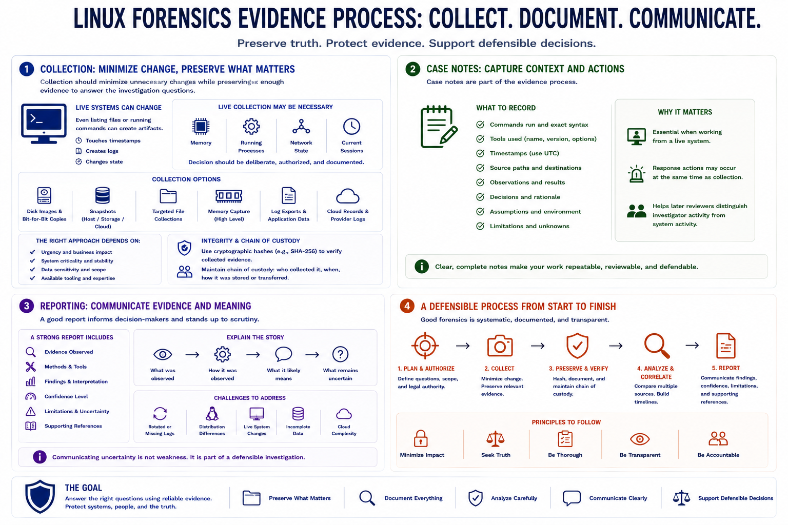

Collection, Preservation, and Reporting
Connecting to LMS... Progress: in progress

Narration
Collection should minimize unnecessary changes while preserving enough evidence to answer the investigation questions. On a live Linux system, even listing files or running commands can create artifacts. Sometimes live collection is still necessary because volatile data, running processes, memory, or current network state may be important. The decision should be deliberate, authorized, and documented.
Disk images, snapshots, targeted file collections, memory capture at a high level, log exports, and cloud records can all support an investigation. The right collection approach depends on urgency, business impact, system criticality, data sensitivity, and available tooling. Hashes help verify whether collected evidence changed after collection. Chain of custody records help document who handled evidence, when, and how it was stored or transferred.
Case notes are part of the evidence process. They should capture commands run, tools used, timestamps, source paths, observations, decisions, assumptions, and limitations. Notes are especially important when analysts must work from a live system or when response actions occur at the same time as collection. Later reviewers need to distinguish investigator activity from system activity under investigation.
Reporting should communicate evidence, methods, findings, confidence, limitations, and supporting references. A good report explains what was observed, how it was observed, what it likely means, and what remains uncertain. Linux forensics often involves incomplete data, rotated logs, distribution differences, and live system changes. Communicating uncertainty is not weakness. It is part of defensible investigation.